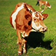

Brune

La brune autrement nommée brune des Alpes est une race bovine provenant de Suisse. Elle descend de la race suisse braunvieh importée aux 18e et 19e siècles. Elle s'adapte au limat montagnard mais s'aclimate mieux à la chaleur. C'est une vache d'assez grand format. En effet elle mesure 1,4 m au garrot pour 650 à 750 kg. Elle produit du lait de qualité bio.
Abondance
L'abondance est une race bovine d'origine française provenant de la région de Haute-Savoie. Ses caractères premiers sont sa rusticité et son aptitude à la marche ce qui lui vaut un long passé de valorisation des alpages. Grâce à son lait, il est possible d'élaborer plusieurs types de fromages. C'est une vache de moyen format avec 1,30 m de hauteur au garrot et 580 à 680 kg.